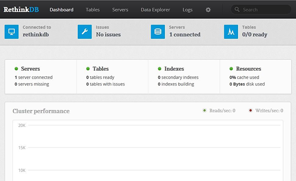

Setting up RethinkDB in CentOS 6, NoSQL
Install and Configure RethinkDB - CentOS 6
Difficulty: 2
Time: 20 minutes
RethinkDB belongs to the NoSQL database family. It is designed specifically to push data to applications in real-time. This provides a base for creating real-time, scalable, database-oriented web applications. It has a very simple API to interact with the databases.
Installing RethinkBD includes two main components: the database itself, and the client driver, which interacts with the database from your programming language.
This article will cover installing and configuring RethinkDB on a CentOS 6 system. You'll need sudo privileges to complete this tutorial.
Install the RethinkDB server
- Add the RethinkDB yum repository to your existing list of repositories:
sudo wget http://download.rethinkdb.com/centos/6/`uname -m`/rethinkdb.repo -O /etc/yum.repos.d/rethinkdb.repo
- Install rethinkDB.
sudo yum install rethinkdb
Install the client drivers
- At present official drivers are available for three languages - Javascript, Ruby, and Python. To install Ruby driver, first install rubygems with the following command:
sudo yum install rubygems
- Install gem
sudo gem install rethinkdb
- Install
EPEL repository using following command:
sudo yum install epel-release
- To install Javascript driver use the following command:
sudo yum install npm
npm install rethinkdb
- To install Python driver, use the following command:
sudo easy_install pip
sudo pip install rethinkdb
Install the Python client driver
In this article we will be installing the Python client driver. You can use pip (Python Package Manager) to install the client driver for RethinkDB. It is a best practice to run Python applications in an isolated environment.
- Install the virtual environment.
sudo yum install python-virtualenv
mkdir rethink
cd rethink
- Create virtual environment structure.
virtualenv venv
- Activate the environment.
source venv/bin/activate
You can use the command deactivate to deactivate the current environment.
- Install the RethinkDB driver using
pip.
sudo pip install rethinkdb
This step will install Python client drivers for RethinkDB.
Start RethinkDB
- Start RethinkDB to access.
rethinkdb --bind all
If you need to stop the process and continue working in your command line, press CTRL-C.
-
Access your server at http://public_IP_of_your_server_or_domain:8080.

Using this Web interface, you can manage creating database, tables, and can configure RethinkDB cluster to manage table replication.
Configure RethinkDB
- First, make a copy of the RethinkDB configuration file using the default.
sudo cp /etc/rethinkdb/default.conf.sample /etc/rethinkdb/instances.d/instance.conf
- Open the RethinkDB configuration file.
sudo vim /etc/rethinkdb/instances.d/instance.conf
-
locate
server-name and type following line beneath it to give your server name.
server-name=rethinkdb
- To make it listen on all network. locate
bind=127.0.0.1 and type following line beneath it.
bind=all
- Save the configuration changes made and close the file.
- Restart RethinkDB with the new build configuration.
sudo service rethinkdb restart
Interact with RethinkDB from Python
In most cases, you will be managing databases using Python. The following commands will help you perform these tasks:
- Activate the virtual environment for Python.
cd ~/rethink
source venv/bin/activate
- Start the Python interpreter.
sudo python
- In the Python interpreter, import the client driver into the environment.
import rethinkdb as r
- Connect with the local database.
r.connect("localhost",28015).repl()
- Create a database.
r.db_create("your_rethink_database").run()
- Create a table called "posts."
r.db("your_rethink_database").table_create("posts").run()
- Insert some test values into the "posts" table.
r.db("your_rethink_database").table("posts").insert({"hello":"world"}).run()
- Print the contents in a table.
c = r.db("your_rethink_database").table("posts").run()
for x in c:
print x{u'hello': u'world', u'id': u'1afa0da6-6d28-4136-b601-e104e4c1339a'}
-
Exit the Python shell.
exit()
- Come out of the virtual environment.
deactivate
Next steps
Congratulations! You've installed and configured RethinkDB. For even more information on how to configure a RethinkDB cluster on CentOS or Fedora, see Set up a sharded RethinkDB Cluster - CentOS, Fedora